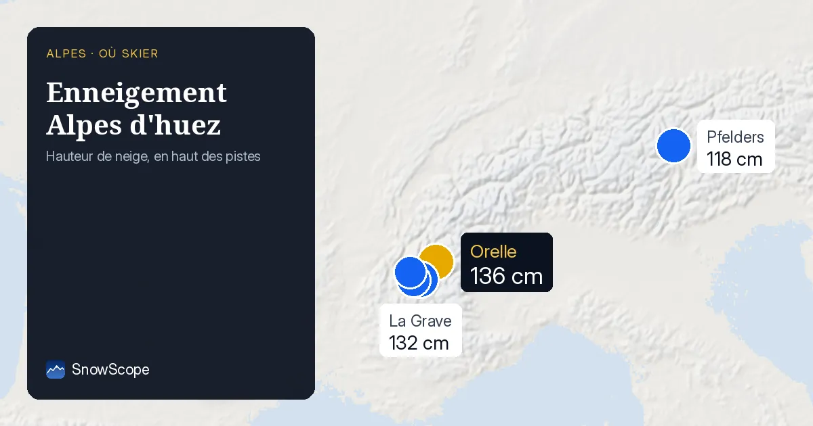

Enneigement Alpes d'huez: 92 cm de neige (Alpes, 21 novembre)
Le 21 novembre, Alpe d'Huez Grand Domaine compte 92 cm de neige sur ses pentes supérieures, se classant quatrième dans les Alpes aujourd'hui. Orelle prend la tête de la région avec 136 cm en altitude, suivi de La Grave avec 132 cm. La neige recouvre 87 520 km² des Alpes et s'accumule dans 971 des 1 204 stations.
Consultez les prévisions neige en temps réel pour Alpe d'Huez Grand Domaine sur l'application SnowScopeHauteurs de neige, alertes poudreuse et carte 3D, gratuitement.
Où l'épaisseur se situe dans les Alpes
Alpe d'Huez se tient aux côtés des leaders de la région. Orelle, à 50 km au sud, a pris de l'avance avec de la neige supplémentaire au cours des trois derniers jours. À Alpe d'Huez, l'épaisseur totale n'a baissé que de 5 cm en 24 heures le 21 novembre, conservant sa stabilité malgré la tendance au réchauffement ce jour-là.
L'altitude compte plus que la localisation. La tempête qui a laissé 92 cm sur les pentes supérieures d'Alpe d'Huez (3 306 m) n'en a déposé qu'environ 50 cm à mi-montagne (autour de 2 000 m) et un manteau mince près de la base. Le gradient marqué de la base au sommet est normal pour début novembre dans les Alpes.
| Station | Hauteur de neige | Neige fraîche, 72 h | Attendu, jours suivants | Sommet |
|---|---|---|---|---|
| Orelle | 136 cm | 105 cm | 88 cm | 3 221 m |
| La Grave | 132 cm | 92 cm | 90 cm | 3 543 m |
| Pfelders | 118 cm | 15 cm | 11 cm | 2 500 m |
| Les Deux Alpes | 102 cm | 64 cm | 72 cm | 3 511 m |
| Alpe d'Huez Grand Domaine | 92 cm | 84 cm | 89 cm | 3 306 m |

Trois couches de neige à Alpe d'Huez
La station se répartit en trois zones neigeuses distinctes. À 3 306 m (sommet), l'épaisseur est d'environ 92 cm. En descendant à environ 2 000 m, la neige s'amenuise à peut-être 40–50 cm. Jusqu'à la base à 1 124 m, le manteau devient inégal et mince.
Cette variation explique pourquoi les skieurs de début de saison choisissent leur timing selon l'altitude, pas selon la date. Les pistes hautes conservent la neige quand les terrains inférieurs restent nus.
Neige réelle au sol à proximité
Trois stations de la région donnent des mesures au sol le 20 novembre. Weißseespitze (3 499 m, en Autriche) a mesuré 352 cm—une station glaciaire haute en excellent état. Donin du Jour (2 385 m) a rapporté 106 cm avec 33 cm tombés en un jour. Trubelboden (2 459 m) a enregistré 90 cm, avec 26 cm de neige fraîche.
Alpe d'Huez se situe entre ces deux stations de mi-montagne en termes d'altitude. Les chiffres confirment que l'épaisseur de neige augmente fortement avec l'altitude en début d'hiver.
Comparé aux 21 novembre précédents
Alpe d'Huez n'apparaît pas dans la comparaison multi-hivernale. Orelle, leader régional, affiche 49 cm à mi-montagne (2 779 m) aujourd'hui contre une moyenne de 64 cm pour cette date—en retard, plus profond que seulement 17 des 46 hivers passés. La neige de début novembre est mince dans les Alpes la plupart des années.
La Grave raconte une histoire plus tranchée : 39 cm à 3 369 m aujourd'hui contre une moyenne de 80 cm. Seulement 10 hivers passés avaient moins de neige à cette altitude à cette date. Même les stations les mieux dotées sont en retard sur leur schéma saisonnier jusqu'à présent.
Ce qui vient ensuite
Les prévisions ajoutent 89 cm sur Alpe d'Huez d'ici le 24 novembre si les systèmes arrivent comme prévu. Dimanche 22 novembre apporte l'afflux le plus important (71 cm), avec des totaux modérés les 23 et 24 novembre. Le timing est serré ; la majorité arrive en un jour.
Le niveau de congélation le 22 novembre monte à environ 2 500–3 000 m—au-dessus de la mi-montagne mais en dessous du sommet. Attendez-vous à une neige mouillée en altitude moyenne ce jour-là, puis un manteau plus sec au-dessus. Les 23–24 novembre, l'air se refroidit et la neige devrait mieux se consolider à toutes les altitudes.
Ce à quoi faire attention avant de partir
La neige mince au début cache souvent les roches et l'herbe. Restez sur les pistes balisées et consultez le site de la station pour savoir quelles pistes sont ouvertes et quand. Les pentes supérieures conservent la neige plus longtemps ; les terrains orientés au sud perdent le couvert en premier.
Le danger d'avalanche aujourd'hui est au niveau 3 (considérable) dans la région. Avant de vous aventurer hors-piste ou en ski de randonnée, consultez le bulletin BERA de Météo-France. La neige fraîche du 22 novembre peut modifier le risque.
Conseils aux skieurs
- Skiez haut : les pentes supérieures à 3 000 m+ affichent 90–100 cm. Les altitudes de base sous 1 500 m sont minces et inégales en début novembre.
- Lundi 22 novembre est prévu comme le jour de neige le plus riche ; si vous pouvez le prévoir, c'est à ce moment-là qu'il faut être en montagne.
- Les pentes orientées au sud perdent le couvert le plus rapidement en début de saison. Préférez les pistes orientées au nord pour plus de tenue.
- La mi-montagne d'Alpe d'Huez (autour de 2 000 m) est la zone frontière : la neige s'amenuise à nu sur certaines pentes. Planifiez vos descentes qui restent hautes ou optez pour les pistes basses en forêt où le manteau est plus fiable.
- La neige précoce est légère et peut cacher des roches juste sous la surface. Skiez prudemment en terrain hors-piste jusqu'à ce que la neige nouvelle se consolide et que la base durcisse.
À propos de ces chiffres
Les hauteurs de neige des stations sont la neige la plus épaisse sur le haut du domaine à la date indiquée ; ce sont des estimations pour une zone, pas une mesure en un point. Les prévisions peuvent changer. Consultez toujours le bulletin d'avalanche officiel avant le hors-piste.
Bulletins d'avalanche officiels: Météo-France BERA
Citer ce bulletin
Pour la recherche, l'enseignement ou la presse : chiffres et graphiques réutilisables librement sous CC BY 4.0 avec cette citation.
SnowScope (2026), Enneigement Alpes d'huez: 92 cm de neige (Alpes, 21 novembre), https://snowscope.app/blog/fr/2026/11/alps-alpe-d-huez-grand-domaine-snow-depth-today-21-november-2026.html, consulté le 2026-11-21
SnowScope (Atlas Labs). (2026, November 21). Enneigement Alpes d'huez: 92 cm de neige (Alpes, 21 novembre). SnowScope snow reports. https://snowscope.app/blog/fr/2026/11/alps-alpe-d-huez-grand-domaine-snow-depth-today-21-november-2026.html
BibTeX
@misc{snowscope2026alpsalpedhuezgranddomain,
author = {{SnowScope (Atlas Labs)}},
title = {Enneigement Alpes d'huez: 92 cm de neige (Alpes, 21 novembre)},
year = {2026},
month = nov,
howpublished = {\url{https://snowscope.app/blog/fr/2026/11/alps-alpe-d-huez-grand-domaine-snow-depth-today-21-november-2026.html}},
note = {Published 2026-11-21 11:24 UTC; accessed 2026-11-21}
}· CC BY 4.0 · Méthodes, données et outils →
Suivre Alpe d'Huez Grand Domaine
Gratuit : un message quand la neige arrive, et la météo chaque matin.
Autres bulletins neige

Les 2 Alpes culmine à 3 511 m pour de la neige abondante en décembre 2026, avec un forfait adulte 6 jours à 266,50 EUR.

De 20 EUR pour un week-end d'ouverture à des forfaits de 6 jours avant Noël : un calendrier des meilleurs bons plans de début de saison dans les Alpes pour 2026, avec la neige à laquelle s'attendre.